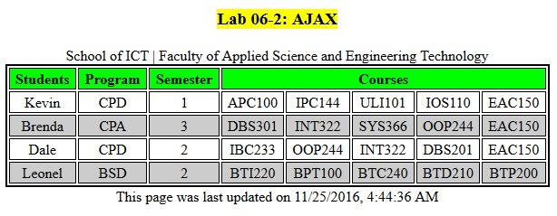

Section D: Thursday, Dec 8, 2016 - 23:59
Grade value: 5% of your final course grade
· To work on JavaScript coding with DOM
· to practice an AJAX call to a Web service
Download and unzip the Lab06.zip file, complete the coding tasks instructed as followings:
Part A: JavaScript coding with DOM
Part A is related to three files: lab06.html, lab06.css and lab06.js. Run the lab06.html in browser and view the source, you’ll find the lab06.css and lab06.js have already been embedded/referenced in the html file. In the lab06.js file, there is an array of Country objects which is available to use. Your work is to do the coding in the lab06.js file (you may add code to lab06.html if needed) and implement the tasks described below:
1. When user double click anywhere in the box of the div element, append a new paragraph in the div box.
2. When user double click anywhere in the box of the form element, change the form's background color to lightblue.
3. When user click the word “Male” or “Female”, the corresponding radio button should change the state – checked or unchecked.
4. Once the html page is loaded into the browser, populate the options (items) for the Country dropdown list using the array of Country objects in the lab06.js. The option should show country names, and the option values should be the 2-letter country codes from the country objects.
Part B: Practice AJAX call
Part B is related to two files: lab06ajax.html and lab06ajax.json. the lab06ajax.html file contains part of JavaScript code which mimic a call to web service (static JSON file lab06ajax.json) using AJAX. Your tasks are to complete the two missing parts in the JavaScript code:
1. Update the url for the JSON file, so the AJAX code can fetch the data.
2. Parse the fetched JSON data and represent the data on the space provided on the HTML page. This is the screenshot:

Notes:
· You must upload the lab06ajax.html and lab06ajax.json to the folder public_html on your Seneca Matrix or Zenit account, then the AJAX application can be run and tested.
· You must update the link to the remote lab06ajax.html file with absolute URL on you Part A lab06.html page, so your Part B can be tested and marked.
§ Compress the three files lab06.html, lab06.css and lab06.js to zip file lab06.zip and submit it to the Blackboard (My.Seneca).
§ NO LATE SUBMISSIONS for labs. Late Lab submissions will not be accepted and will receive a grade of zero (0).
§ After the end (23:59) of the due date, the lab submission link on the Blackboard will no longer available.
§ All INT222 labs are subject to change after released. It's your responsibility to keep your lab assignments up to date before the lab is submitted.